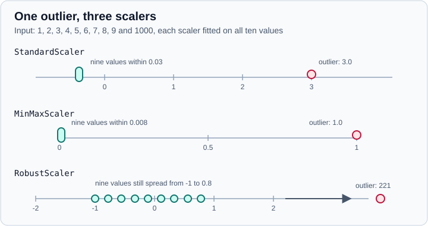

Scaling & Transforming Features
|
This content was generated with the assistance of AI and should be verified against the official documentation before being relied on in production. |
This page targets scikit-learn 1.9 (1.9.1 at the time of writing) with NumPy 2.5 and pandas 3.1, and every example was run on Python 3.13.18, NumPy 2.5.4, pandas 3.1.0 and scikit-learn 1.9.1 in October 2026. Examples target Python 3.13 or 3.14. It covers the transformers in sklearn.preprocessing that rescale, reshape or expand numeric columns. Encoding of categorical columns is on Encoding Categorical Features, missing values on Imputing Missing Values, and the conceptual picture of feature engineering (including dates, text and leakage) on Feature Engineering.
Every transformer follows the same contract, described in The Estimator API: fit(X) learns statistics from the data, transform(X) applies them, fit_transform(X) does both, and most have inverse_transform. Learned values are stored in attributes that end with an underscore (mean_, scale_, lambdas_).
Why scale at all
Many learning algorithms are sensitive to the units of the features. A distance, a dot product or a penalty is computed on all the columns together, so a column measured in the thousands drowns one measured in fractions.
-
Distance-based models (k-nearest neighbours, k-means, kernel SVMs with an RBF kernel) compare samples through distances.
-
Regularised linear models (Ridge, Lasso, logistic regression with a penalty) penalise coefficients equally, which is only fair if features are on comparable scales. Gradient-based solvers also converge faster.
-
Principal component analysis looks for directions of maximal variance; unscaled data makes the largest-unit column the first component.
-
Neural networks train more stably on centred inputs.
-
Tree-based models (decision trees, random forests, gradient boosting) split on thresholds of a single feature at a time and are not affected by a monotonic rescaling, so scaling them is unnecessary.
The wine data set has features on very different scales (proline is in the hundreds and hue is below 2). Cross-validated accuracy with and without standardisation, each model fitted with the scaler inside a pipeline:
from sklearn.datasets import load_wine
from sklearn.linear_model import LogisticRegression
from sklearn.model_selection import cross_val_score, train_test_split
from sklearn.neighbors import KNeighborsClassifier
from sklearn.pipeline import make_pipeline
from sklearn.preprocessing import StandardScaler
from sklearn.svm import SVC
from sklearn.tree import DecisionTreeClassifier
X, y = load_wine(return_X_y=True, as_frame=True)
print(X[["alcohol", "ash", "hue", "proline"]].describe().loc[["min", "max", "std"]].round(2))
X_train, X_test, y_train, y_test = train_test_split(X, y, stratify=y, random_state=0)
models = {"KNN": KNeighborsClassifier(), "SVC": SVC(), "Tree": DecisionTreeClassifier(random_state=0),
"LogReg": LogisticRegression(max_iter=5000)}
for name, model in models.items():
raw = cross_val_score(model, X_train, y_train, cv=5).mean()
scaled = cross_val_score(make_pipeline(StandardScaler(), model), X_train, y_train, cv=5).mean()
print(f"{name:7s} raw={raw:.3f} scaled={scaled:.3f}")Output:
alcohol ash hue proline min 11.03 1.36 0.48 278.00 max 14.83 3.23 1.71 1680.00 std 0.81 0.27 0.23 314.91 KNN raw=0.721 scaled=0.940 SVC raw=0.684 scaled=0.978 Tree raw=0.896 scaled=0.896 LogReg raw=0.948 scaled=0.970
The nearest-neighbour and SVM models gain 20 to 30 percentage points, logistic regression a little, and the tree is unchanged to the digit.
Fit on training data only
A scaler learns statistics (a mean, a minimum, quantiles) and those statistics are part of the model. Computing them on the whole table before splitting uses information from the evaluation rows. Because most scalers never see the target, the damage is usually small, but it is a leak in principle, it becomes serious with supervised or high-dimensional transformers, and it makes the habit unsafe. The rule is the same for every transformer on this page: fit on the training data, then only call transform on anything else.
The reliable way to follow it is to put the scaler in a Pipeline so that it is refitted inside every cross-validation fold.
import pandas as pd
from sklearn.compose import ColumnTransformer
from sklearn.datasets import make_classification
from sklearn.linear_model import LogisticRegression
from sklearn.model_selection import cross_val_score, train_test_split
from sklearn.pipeline import make_pipeline
from sklearn.preprocessing import RobustScaler, StandardScaler
X, y = make_classification(random_state=42)
X_train, X_test, y_train, y_test = train_test_split(X, y, random_state=42)
pipe = make_pipeline(StandardScaler(), LogisticRegression())
pipe.fit(X_train, y_train) # the scaler is fitted on X_train only
print(round(pipe.score(X_test, y_test), 3))
print(cross_val_score(pipe, X, y, cv=5).round(3)) # refitted inside every fold
# columns can be treated differently, with named output columns
df = pd.DataFrame({"age": [25, 32, 47, 51], "income": [30e3, 48e3, 90e3, 1.2e6], "city": ["a", "b", "a", "c"]})
ct = ColumnTransformer([("num", RobustScaler(), ["age", "income"])], remainder="passthrough")
ct.set_output(transform="pandas")
print(ct.fit_transform(df).round(2))
print(ct.get_feature_names_out())Output:
0.96 [1. 1. 1. 0.9 0.9] num__age num__income remainder__city 0 -0.82 -0.12 a 1 -0.42 -0.06 b 2 0.42 0.06 a 3 0.65 3.49 c ['num__age' 'num__income' 'remainder__city']
ColumnTransformer applies different transformers to different columns (see ColumnTransformer & Heterogeneous Data), and set_output(transform="pandas") keeps the column names (see pandas & polars Output). The whole discussion of leakage is in Common Pitfalls: Leakage & Randomness.
StandardScaler
StandardScaler removes the mean and divides by the standard deviation, so every column has mean 0 and unit variance (z = (x - mean) / std). It is the usual default.
import numpy as np
from sklearn.preprocessing import StandardScaler
np.set_printoptions(precision=3, suppress=True)
X_train = np.array([[1.0, -1.0, 2.0], [2.0, 0.0, 0.0], [0.0, 1.0, -1.0]])
scaler = StandardScaler().fit(X_train)
print(scaler.mean_, scaler.scale_, scaler.var_, scaler.n_samples_seen_)
print(scaler.transform(X_train))
print(scaler.transform([[-3.0, -1.0, 4.0]])) # new data may leave the training range
print(scaler.inverse_transform(scaler.transform(X_train)))Output:
[1. 0. 0.333] [0.816 0.816 1.247] [0.667 0.667 1.556] 3.0 [[ 0. -1.225 1.336] [ 1.225 0. -0.267] [-1.225 1.225 -1.069]] [[-4.899 -1.225 2.94 ]] [[ 1. -1. 2.] [ 2. 0. 0.] [ 0. 1. -1.]]
Details worth knowing:
-
with_mean=Falseskips centring andwith_std=Falseskips scaling. -
The standard deviation is the population one (divisor
n), notn - 1. -
A constant column has zero variance; the scaler leaves its scale at 1 rather than dividing by zero, so it becomes all zeros. Missing values are ignored when fitting and kept as
nanwhen transforming. -
Outliers inflate the mean and the standard deviation, which compresses the ordinary values (see the figure below).
-
partial_fitupdates the statistics chunk by chunk, so a data set that does not fit in memory can be scaled incrementally. -
After fitting on a data frame,
feature_names_in_andn_features_in_are recorded, andget_feature_names_out()returns the names.
import numpy as np
from sklearn.datasets import load_wine
from sklearn.preprocessing import StandardScaler
X, _ = load_wine(return_X_y=True, as_frame=True)
incremental = StandardScaler()
for chunk in np.array_split(X.to_numpy(), 4):
incremental.partial_fit(chunk)
print(np.allclose(incremental.mean_, StandardScaler().fit(X).mean_), incremental.n_samples_seen_)
scaler = StandardScaler().set_output(transform="pandas").fit(X)
print(scaler.feature_names_in_[:3], scaler.n_features_in_)
print(scaler.transform(X).iloc[:2, :3].round(3))
print(StandardScaler().fit_transform([[1.0, 5.0], [1.0, 6.0], [1.0, 7.0]])) # constant first column
print(StandardScaler().fit_transform([[1.0], [np.nan], [3.0]]).ravel()) # NaN passes throughOutput:
True 178.0 ['alcohol' 'malic_acid' 'ash'] 13 alcohol malic_acid ash 0 1.519 -0.562 0.232 1 0.246 -0.499 -0.828 [[ 0. -1.22474487] [ 0. 0. ] [ 0. 1.22474487]] [-1. nan 1.]
MinMaxScaler and MaxAbsScaler
MinMaxScaler maps each column to a range (default feature_range=(0, 1)), x' = (x - min) / (max - min) * (high - low) + low. It preserves the shape of the distribution and bounds the output, which suits inputs to bounded activations and image-like data. MaxAbsScaler divides by the largest absolute value, so data lands in [-1, 1] and zeros stay zeros: it was designed for sparse data and data already centred at zero.
import numpy as np
from sklearn.preprocessing import MaxAbsScaler, MinMaxScaler
np.set_printoptions(precision=3, suppress=True)
X_train = np.array([[1.0, -1.0, 2.0], [2.0, 0.0, 0.0], [0.0, 1.0, -1.0]])
X_new = np.array([[-3.0, -1.0, 4.0]])
mm = MinMaxScaler().fit(X_train)
print(mm.transform(X_train))
print(mm.transform(X_new)) # outside [0, 1]: the range is learned from training data
print(MinMaxScaler(clip=True).fit(X_train).transform(X_new)) # clip=True forces the range
print(MinMaxScaler(feature_range=(-1, 1)).fit_transform(X_train)[:2])
print(mm.scale_, mm.min_, mm.data_min_, mm.data_max_)
print(MaxAbsScaler().fit_transform(X_train))Output:
[[0.5 0. 1. ] [1. 0.5 0.333] [0. 1. 0. ]] [[-1.5 0. 1.667]] [[0. 0. 1.]] [[ 0. -1. 1. ] [ 1. 0. -0.333]] [0.5 0.5 0.333] [0. 0.5 0.333] [ 0. -1. -1.] [2. 1. 2.] [[ 0.5 -1. 1. ] [ 1. 0. 0. ] [ 0. 1. -0.5]]
Min-max scaling is sensitive to outliers because the minimum and maximum define the whole range. New data outside the training range maps outside the target range unless clip=True is set.
RobustScaler: data with outliers
RobustScaler centres on the median and divides by the interquartile range (the 25th to 75th percentile by default), statistics that a few extreme values barely move. Parameters: with_centering, with_scaling, quantile_range=(25.0, 75.0) and unit_variance (rescale so a normal distribution would get unit variance).

import numpy as np
from sklearn.preprocessing import MinMaxScaler, RobustScaler, StandardScaler
np.set_printoptions(precision=3, suppress=True)
x = np.array([[1.0], [2.0], [3.0], [4.0], [5.0], [6.0], [7.0], [8.0], [9.0], [1000.0]])
for scaler in (StandardScaler(), MinMaxScaler(), RobustScaler()):
print(f"{type(scaler).__name__:15s}", scaler.fit_transform(x).ravel().round(3))
robust = RobustScaler().fit(x)
print(robust.center_, robust.scale_) # median and IQR
print(RobustScaler(quantile_range=(10, 90)).fit(x).scale_)Output:
StandardScaler [-0.347 -0.343 -0.34 -0.337 -0.333 -0.33 -0.327 -0.323 -0.32 3. ] MinMaxScaler [0. 0.001 0.002 0.003 0.004 0.005 0.006 0.007 0.008 1. ] RobustScaler [ -1. -0.778 -0.556 -0.333 -0.111 0.111 0.333 0.556 0.778 221. ] [5.5] [4.5] [106.2]
The figure shows these numbers. The standard and min-max scalers squeeze the nine ordinary values into a range of 0.03 and 0.008, while RobustScaler keeps them spread from -1 to 0.78. The outlier itself is still extreme (221) and is not removed: robust scaling reduces its influence on the other values, it does not decide whether it is an error. For that use the outlier-handling steps in Data Cleaning & Preparation.
Scaling sparse data
Centring a sparse matrix would turn the zeros into non-zeros and exhaust memory, so the scalers refuse it.
-
MaxAbsScaleris the recommended scaler for sparse input. -
StandardScaleraccepts sparse matrices only withwith_mean=False; otherwise it raisesValueError. -
RobustScalercannot be fitted on sparse input but can transform it. -
CSR and CSC formats avoid an internal conversion copy.
import numpy as np
from scipy import sparse
from sklearn.preprocessing import MaxAbsScaler, StandardScaler
np.set_printoptions(precision=3, suppress=True)
X = sparse.csr_matrix(np.array([[0, 0, 3.0], [4.0, 0, 0], [0, 5.0, 6.0]]))
try:
StandardScaler().fit(X)
except ValueError as exc:
print("ValueError:", str(exc)[:60])
print(StandardScaler(with_mean=False).fit_transform(X).toarray())
print(type(MaxAbsScaler().fit_transform(X)).__name__)Output:
ValueError: Cannot center sparse matrices: pass `with_mean=False` instea [[0. 0. 1.225] [2.121 0. 0. ] [0. 2.121 2.449]] csr_matrix
Normalizer: scaling rows
Normalizer and the function normalize rescale each sample (each row) to unit norm: "l2" (default), "l1" or "max". This is not the same thing as column scaling. It is used when only the direction of a vector matters, for example with cosine similarity or text vectors, and it is stateless (fit does nothing).
import numpy as np
from sklearn.preprocessing import Normalizer, normalize
np.set_printoptions(precision=3, suppress=True)
X = [[1.0, -1.0, 2.0], [2.0, 0.0, 0.0], [0.0, 1.0, -1.0]]
print(normalize(X, norm="l2"))
print(normalize(X, norm="l1"))
print(normalize(X, norm="max"))
print(Normalizer().transform([[-1.0, 1.0, 0.0]]))Output:
[[ 0.408 -0.408 0.816] [ 1. 0. 0. ] [ 0. 0.707 -0.707]] [[ 0.25 -0.25 0.5 ] [ 1. 0. 0. ] [ 0. 0.5 -0.5 ]] [[ 0.5 -0.5 1. ] [ 1. 0. 0. ] [ 0. 1. -1. ]] [[-0.707 0.707 0. ]]
Source: scikit-learn: Normalization
"Normalization" is used for both ideas in the literature (min-max scaling of columns, and unit-norm rows). In scikit-learn the word belongs to Normalizer, and the column variants are scalers.
Non-linear transformations
Both quantile and power transforms are monotonic: they preserve the order of the values within a column.
PowerTransformer: towards a normal distribution
PowerTransformer fits a parameter lambda per column by maximum likelihood to make the data as Gaussian as possible, which stabilises variance and reduces skew. Two methods:
-
method="yeo-johnson"(the default) works for any real values. -
method="box-cox"needs strictly positive data and raisesValueErrorotherwise.
The output is standardised by default (standardize=True).
import numpy as np
from scipy import stats
from sklearn.preprocessing import PowerTransformer, QuantileTransformer
rng = np.random.default_rng(0)
x = rng.lognormal(mean=0, sigma=1, size=(1000, 1)) # strongly right-skewed
print("skew before:", round(float(stats.skew(x.ravel())), 2))
yeo = PowerTransformer(method="yeo-johnson").fit(x)
box = PowerTransformer(method="box-cox", standardize=False).fit(x)
quant = QuantileTransformer(output_distribution="normal", n_quantiles=200, random_state=0).fit(x)
print("yeo-johnson lambda", yeo.lambdas_.round(3), "skew", round(float(stats.skew(yeo.transform(x).ravel())), 3))
print("box-cox lambda", box.lambdas_.round(3), "skew", round(float(stats.skew(box.transform(x).ravel())), 3))
print("quantile (normal) skew", round(float(stats.skew(quant.transform(x).ravel())), 3))
try:
PowerTransformer(method="box-cox").fit([[1.0], [0.0], [2.0]])
except ValueError as exc:
print("ValueError:", exc)
print(yeo.inverse_transform(yeo.transform(x[:3])).ravel(), x[:3].ravel())Output:
skew before: 3.87 yeo-johnson lambda [-0.907] skew 0.133 box-cox lambda [0.023] skew 0.002 quantile (normal) skew -0.011 ValueError: The Box-Cox transformation can only be applied to strictly positive data [1.1339762 0.8762491 1.8972826] [1.1339762 0.8762491 1.8972826]
A lambda near 0 for Box-Cox means "take the logarithm", as expected for lognormal data. Power transforms work very well on some distributions and not at all on others (multimodal ones in particular), so check a histogram before and after. In 1.9 the Yeo-Johnson transform uses scipy.stats.yeojohnson internally, so results can differ in the last digits from earlier versions.
QuantileTransformer: towards any distribution
QuantileTransformer applies the empirical cumulative distribution function of each column, mapping values to a uniform distribution on [0, 1] (output_distribution="uniform", default) or then to a normal one ("normal"). It is non-parametric, robust to outliers and makes every column follow the same distribution, but it distorts distances and correlations, and it needs a fairly large sample (n_quantiles=1000 by default, reduced to the number of samples with a warning when the data is smaller). Values outside the training range are clipped to the ends of the output range.
import numpy as np
from sklearn.preprocessing import QuantileTransformer
rng = np.random.default_rng(0)
x = rng.lognormal(mean=0, sigma=1, size=(1000, 1))
quantile = QuantileTransformer(n_quantiles=10, random_state=0).fit(x)
print(quantile.transform([[x.min() - 5], [np.median(x)], [x.max() + 100]]).ravel()) # clipped to [0, 1]
print(quantile.quantiles_.shape, quantile.references_.round(2))Output:
[0. 0.49287397 1. ] (10, 1) [0. 0.11 0.22 0.33 0.44 0.56 0.67 0.78 0.89 1. ]
An upcoming change: the unreleased 1.10 development line changes how QuantileTransformer and quantile_transform estimate quantiles (the averaged_inverted_cdf method, no cap of n_quantiles at n_samples, and dense subsampling with replacement), which changes quantiles_ even without sample weights. Do not expect bit-for-bit identical results across 1.9 and 1.10.
Discretization
KBinsDiscretizer
KBinsDiscretizer partitions a continuous column into n_bins intervals learned from the training data. The strategy decides the edges:
-
"uniform": equal-width bins. -
"quantile"(default): equal-count bins. -
"kmeans": bins from a one-dimensional k-means clustering.
encode selects the output: "onehot" (default, sparse), "onehot-dense" or "ordinal". Binning makes a linear model able to represent a step-like relationship while staying interpretable.
import numpy as np
from sklearn.preprocessing import KBinsDiscretizer
rng = np.random.default_rng(0)
X = np.array([[-3.0, 5.0, 15.0], [0.0, 6.0, 14.0], [6.0, 3.0, 11.0]])
est = KBinsDiscretizer(n_bins=[3, 2, 2], encode="ordinal", strategy="uniform").fit(X)
print(est.transform(X))
print([edges.round(2) for edges in est.bin_edges_])
v = rng.exponential(size=(200, 1))
for strategy in ("uniform", "quantile", "kmeans"):
kb = KBinsDiscretizer(n_bins=4, encode="ordinal", strategy=strategy, random_state=0).fit(v)
counts = np.bincount(kb.transform(v).ravel().astype(int))
print(f"{strategy:9s}", kb.bin_edges_[0].round(2), counts)
print(KBinsDiscretizer(n_bins=3, encode="onehot").fit_transform(v).shape)Output:
[[0. 1. 1.] [1. 1. 1.] [2. 0. 0.]] [array([-3., 0., 3., 6.]), array([3. , 4.5, 6. ]), array([11., 13., 15.])] uniform [0. 1.52 3.03 4.54 6.06] [146 42 11 1] quantile [0. 0.4 0.81 1.65 6.06] [50 50 50 50] kmeans [0. 1.07 2.41 4.61 6.06] [124 52 23 1] (200, 3)
On skewed data the "uniform" strategy leaves most samples in the first bin while "quantile" fills all bins equally, which is usually what you want. Zero-width bins are removed with a warning. Custom, domain-defined bins (age groups, tax brackets) can be built with FunctionTransformer(pd.cut, kw_args=...).
Binarizer
Binarizer(threshold=0.0) turns a numeric column into 0 or 1: values greater than the threshold become 1. It is stateless and is the two-bin special case of discretization.
from sklearn.preprocessing import Binarizer
X = [[1.0, -1.0, 2.0], [2.0, 0.0, 0.0], [0.0, 1.0, -1.0]]
print(Binarizer(threshold=1.1).fit_transform(X))Output:
[[0. 0. 1.] [1. 0. 0.] [0. 0. 0.]]
Generating non-linear features
PolynomialFeatures
PolynomialFeatures(degree=2, *, interaction_only=False, include_bias=True) expands columns into all products up to the degree, so a linear model can fit curves and interactions. The number of output columns grows quickly with the degree and the number of inputs, so scale the inputs first and regularise the model.
import numpy as np
from sklearn.preprocessing import PolynomialFeatures
X = np.arange(6).reshape(3, 2)
poly = PolynomialFeatures(2).fit(X)
print(poly.get_feature_names_out(["a", "b"]))
print(poly.transform(X)[1])
print(PolynomialFeatures(2, interaction_only=True, include_bias=False).fit(X).get_feature_names_out(["a", "b"]))Output:
['1' 'a' 'b' 'a^2' 'a b' 'b^2'] [1. 2. 3. 4. 6. 9.] ['a' 'b' 'a b']
SplineTransformer
SplineTransformer builds a B-spline basis for each column separately (no interactions). Compared with polynomials, splines stay stable at a low fixed degree (3 is usual), do not oscillate near the boundaries (Runge’s phenomenon), produce a banded, well-conditioned matrix, and have options for extrapolation (extrapolation is "constant" by default, and can be "error", "linear", "continue" or "periodic", which suits cyclic features such as hour of day). Degree 0 is equivalent to one-hot binned features.
import numpy as np
from sklearn.preprocessing import SplineTransformer
np.set_printoptions(precision=3, suppress=True)
X = np.arange(5).reshape(-1, 1)
spline = SplineTransformer(degree=2, n_knots=3).fit(X)
print(spline.transform(X))
print(spline.transform([[10.0]])) # constant extrapolation
print(SplineTransformer(degree=2, n_knots=3, extrapolation="linear").fit(X).transform([[10.0]]).round(2))
print(SplineTransformer(degree=3, n_knots=5, extrapolation="periodic").fit_transform(np.linspace(0, 1, 4).reshape(-1, 1)).shape)Output:
[[0.5 0.5 0. 0. ] [0.125 0.75 0.125 0. ] [0. 0.5 0.5 0. ] [0. 0.125 0.75 0.125] [0. 0. 0.5 0.5 ]] [[0. 0. 0.5 0.5]] [[ 0. 0. -2.5 3.5]] (4, 4)
Source: scikit-learn: Spline transformer
Custom transformations
FunctionTransformer
FunctionTransformer(func=None, inverse_func=None, *, validate=False, accept_sparse=False, check_inverse=True, feature_names_out=None, kw_args=None, inv_kw_args=None) wraps any function as a stateless transformer so it can be used in a Pipeline or ColumnTransformer. Typical uses are np.log1p for skewed positive data, np.sqrt, ratio features, or pd.cut.
import numpy as np
import pandas as pd
from sklearn.preprocessing import FunctionTransformer
df = pd.DataFrame({"price": [0, 10, 100], "area": [1.0, 2.0, 3.0]})
log = FunctionTransformer(np.log1p, inverse_func=np.expm1, check_inverse=True, feature_names_out="one-to-one")
print(log.fit_transform(df).round(3))
print(log.get_feature_names_out())
log.set_output(transform="pandas")
print(log.fit_transform(df).round(3))Output:
price area 0 0.000 0.693 1 2.398 1.099 2 4.615 1.386 ['price' 'area'] price area 0 0.000 0.693 1 2.398 1.099 2 4.615 1.386
Set feature_names_out ("one-to-one" or a callable) when the function keeps the columns, otherwise get_feature_names_out is unavailable and a pipeline cannot name its output. check_inverse=True verifies that inverse_func(func(X)) returns X and warns if it does not.
TransformedTargetRegressor: transforming y
When the target is skewed, models often fit better on a transformed target but must report predictions on the original scale. TransformedTargetRegressor does the bookkeeping: it transforms y before fitting and inverts the transformation on predict.
import numpy as np
from sklearn.compose import TransformedTargetRegressor
from sklearn.linear_model import LinearRegression, Ridge
from sklearn.preprocessing import StandardScaler
rng = np.random.default_rng(0)
X = rng.uniform(0, 5, size=(500, 1))
y = np.exp(0.8 * X.ravel() + rng.normal(0, 0.2, 500)) # exponential growth
plain = LinearRegression().fit(X, y)
logged = TransformedTargetRegressor(regressor=LinearRegression(), func=np.log, inverse_func=np.exp).fit(X, y)
print("plain R2", round(plain.score(X, y), 3), "| log target R2", round(logged.score(X, y), 3))
print(logged.regressor_.coef_.round(3))
scaled = TransformedTargetRegressor(regressor=Ridge(), transformer=StandardScaler()).fit(X, y)
print(scaled.transformer_)Output:
plain R2 0.74 | log target R2 0.931 [0.802] StandardScaler()
Pass either func and inverse_func, or a transformer object (such as QuantileTransformer or PowerTransformer), not both. The R² reported by score is computed on the original scale of the target.
Choosing quickly
| Situation | Start with |
|---|---|
Roughly symmetric features, a distance or penalty based model |
|
Bounded inputs, image-like data, a model that needs [0, 1] |
|
Sparse matrix |
|
Outliers or heavy tails that you want to keep |
|
Skewed positive feature, linear model |
|
Very odd distribution, large sample, want a common distribution |
|
Only the direction of each sample matters |
|
A linear model should capture steps |
|
A linear model should capture curves |
|
Skewed target |
|
Tree-based model |
Usually nothing |
Where older tutorials and books are outdated
| Older statement | Current state (October 2026) |
|---|---|
|
Replaced by |
|
It scales rows. Column scaling is |
Scaling the whole data set before |
Fit the scaler on training data only, preferably inside a |
|
|
|
|
Scaling is needed for every model |
It is not needed for tree-based models and ensembles of trees. |
References
-
scikit-learn example: Compare the effect of different scalers on data with outliers
-
scikit-learn example: Demonstrating the different strategies of KBinsDiscretizer
-
Eilers, P. and Marx, B. (1996). Flexible smoothing with B-splines and penalties. Statistical Science 11, 89-121.
-
Yeo, I.-K. and Johnson, R. A. (2000). A new family of power transformations to improve normality or symmetry. Biometrika 87, 954-959.